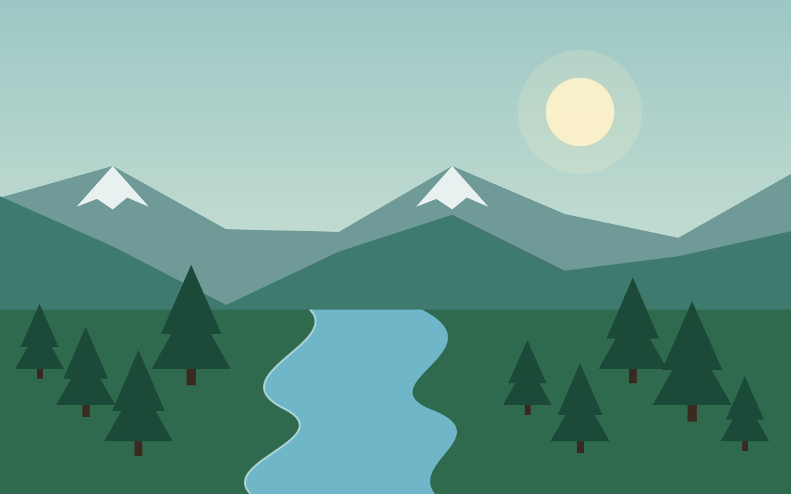
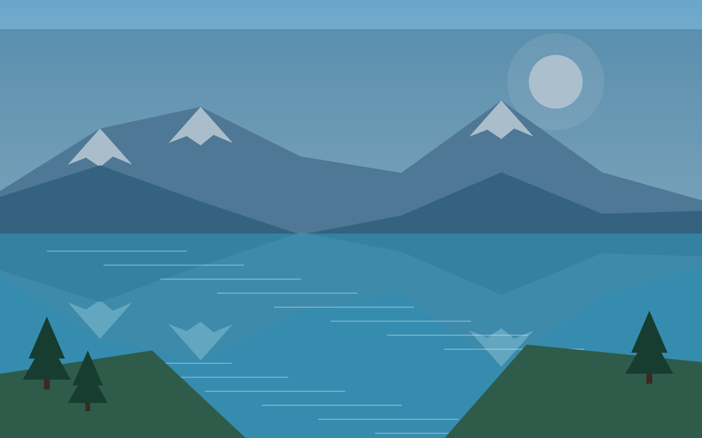
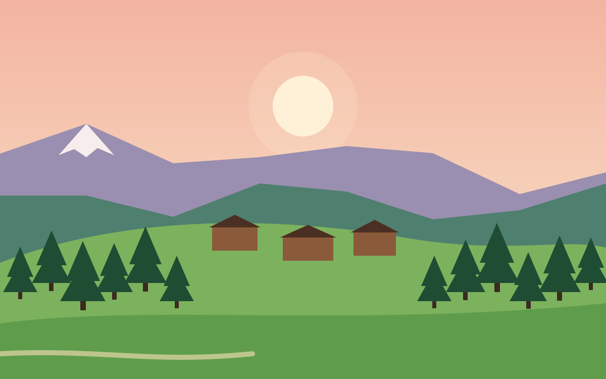
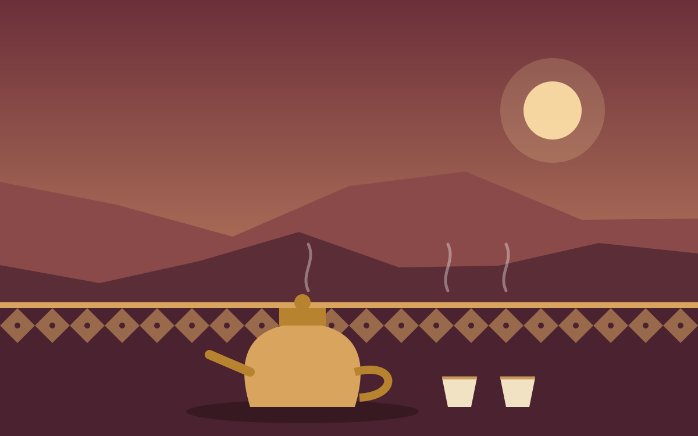

Valley
Neelum Valley
River valleys, mountain villages and scenic landscapes.
Explore details – Neelum ValleyA journey beyond ordinary
Mountain valleys, alpine lakes, living heritage and unforgettable journeys. Discover the beauty of Neelum Valley and beyond.
Start with some of the region’s most memorable places.

River valleys, mountain villages and scenic landscapes.
Explore details – Neelum Valley
An alpine lake reached by seasonal mountain routes.
Explore details – Ratti Gali Lake
A hilltop village known for green meadows and mountain views.
Explore details – Arang Kel
Explore historic Sharda, traditional food, local craftsmanship and the hospitality of Kashmir’s communities.
Discover culture